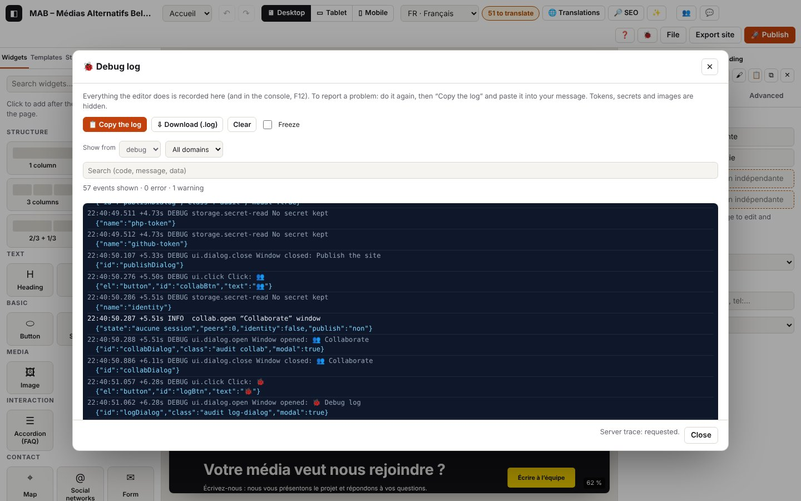

0. The debug log

On this page
The log extracts below were captured in French; codes and levels are identical in every language (the messages in your log are in the interface language).
Atelier records everything it does: in the browser console (F12), in the 🐞 Debug log window and, on your hosting, in the server log kept by publish.php. This chapter explains how to get these logs, how to read them and how to adjust them.
Log domains: boot.* (start-up), log.* (the log itself), app.* (browser errors and events), ui.* (what you do: clicks, fields, windows, shortcuts, messages), net.* (network requests), perf.* (slowness), php.* (lines coming from publish.php).
Check everything at once: open the editor with
?autotestat the end of the address (or typeautotest()in the console, or Ctrl+K “self-test”): the use cases in this guide are replayed and the report appears, ready to copy; your project is put back as it was at the end (chapter 15).
0.1 Copy the log to report a problem
Goal: send, in a single paste, everything needed to understand a problem.
Steps
- Do the operation that causes the problem again (no need to reload the page first: the log keeps the last 5000 events since the editor was opened).
- Click 🐞 in the top bar (or Ctrl+Alt+J, or Ctrl+K then “log”).
- Click 📋 Copy the log and paste it into your message. If the browser refuses the copy, click ⇩ Download (.log) and attach the file.
What you see: the “🐞 Debug log” window with the live lines (the last 500) and the number of errors and warnings. The red badge on 🐞 counts the errors since start-up.
Expected log (real extract, with the ui.* lines: journaux/journal-fenetre.log)
Technical details: expected log
04:38:02.233 +2.66s DEBUG ui.click Clic : 🐞1 {"el":"button","id":"logBtn","text":"🐞1"}
04:38:02.236 +2.67s DEBUG ui.dialog.open Fenêtre ouverte : 🐞 Journal de débogage {"id":"logDialog","class":"audit log-dialog","modal":true}
04:38:02.686 +3.12s DEBUG ui.click Clic : 📋 Copier le journal {"el":"button","text":"📋 Copier le journal","data":{"logCopy":""},"dialog":"logDialog"}
04:38:02.709 +3.14s WARN log.copy-fail Copie refusée par le navigateur : utilisez « Télécharger » {"error":"Failed to execute 'writeText' on 'Clipboard': Write permission denied."}
04:38:03.116 +3.54s DEBUG ui.click Clic : ⇩ Télécharger (.log) {"el":"button","text":"⇩ Télécharger (.log)","data":{"logDownload":""},"dialog":"logDialog"}
04:38:03.136 +3.56s INFO log.download Journal téléchargé {"chars":3603}In a normal Chrome, the copy works: log.copy (INFO) with the number of characters copied and of server lines added. Here, the test browser is not allowed to write to the clipboard: this is the log.copy-fail variant.
The copied text starts with the environment, then the events:
=== Journal Atelier ===
atelier : cycle 16 · publish.php attendu v4
date : 2026-10-29T03:38:03.134Z
fuseau : Asia/Tokyo
adresse : https://…/atelier/index.html
navigateur : Google Chrome 148, Chromium 148
plateforme : macOS
langues : fr-BE, fr, ja
écran : 1728×1117 · fenêtre 1440×900 · ×2
machine : 10 cœurs · 8 Go
réseau : en ligne · 4g
stockage : 41 Mo utilisés sur 299 Go
journal : console debug · tampon debug · trace serveur oui
projet : {"nom":"MAB – Médias Alternatifs Belges","langues":["fr","nl","de","en"],"pages":2,"éléments":57,…}
éditeur : {"page":"p_zdmisxft","langue":"fr","appareil":"desktop","sélection":null,"édition":"page",…}
ia : {…} (chapitre 7)
collaboration : {…} (chapitre 10)
événements : 214 · erreurs : 0 · avertissements : 1
04:23:19.490 +0.00s INFO boot.log Journal prêt …Variants
| Situation | What changes | Log |
|---|---|---|
| Copy accepted | “Log copied: paste it into your message.” | log.copy (INFO) {"chars":…, "server":…} |
| Copy refused (browser, tab not active) | “The browser refuses the copy: use “Download”.” | log.copy-fail (WARN) |
| File rather than copy | a file atelier-journal-AAAA-MM-JJ-HH-MM-SS.log is downloaded | log.download (INFO) |
| Starting from scratch before trying again | “Clear” empties the buffer and resets the counters to zero | log.clear (INFO) |
| Server log read before the copy | its lines are added at the end, under “=== Server log (publish.php) ===” | see 0.4 |
Errors
| Situation | Message shown | Log | What to do |
|---|---|---|---|
| The 🐞 button does not appear, the editor stays blank | nothing, or a half-displayed editor | in the console only: [Atelier] boot.error …, boot.resource, boot.rejection, then after 15 s boot.timeout (ERROR) | open the console (F12) and copy all the [Atelier] lines (see 0.2) |
0.2 Read the log in the console (F12)
Goal: follow the log live, or get it when the editor does not start.
Steps
- Open the developer tools: F12 (or Cmd+Option+I on a Mac), Console tab.
- Type
[Atelier]in the filter to see only Atelier's lines. - To copy everything at once: type
atelierDebug.copy()then Enter (the full text, with the environment, goes to the clipboard); oratelierDebug.download().
What you see: each line starts with [Atelier] in colour: grey (DEBUG), blue (INFO), orange (WARN), red (ERROR). DEBUG lines are shown at the console's “Info” level (no need to turn on “Verbose”); TRACE lines only at the “Verbose” level. For an error, the Error object follows the line: click it to see the call stack with links to the code.
Console commands
| Command | Effect |
|---|---|
atelierDebug.copy() | copies the full log (environment + events) |
atelierDebug.download() | downloads the log as a .log file |
atelierDebug.dump() | shows the full log in the console and returns it |
atelierDebug.dump({ level: 'warn' }) | only warnings and errors (filters: level, scope, text, flow) |
atelierDebug.entries({ scope: 'publish' }) | the events of one domain, as objects |
atelierDebug.level('trace') | console and buffer at TRACE (everything); atelierDebug.level('info') to quieten the console |
atelierDebug.clear() | empties the log |
Other error messages on the page (libraries, browser) that go through console.error or console.warn are copied into the log under the code app.console (ERROR or WARN).
0.3 Set the level of detail
Goal: see more (or fewer) details.
Steps
- In 🐞 → “Log settings”: Console (F12) from and Keep in memory from (trace, debug, info, warn, error;
offturns the console off), and Ask publish.php for its trace. - Or in the editor's address:
?debug(console at DEBUG),?trace(everything, very verbose),?quiet(console at WARN only). The setting is kept on this device (localStorage['atelier-log']).
By default, during the test phase: console and memory at DEBUG, server trace requested.
Expected log
Technical details: expected log
04:38:03.413 +3.84s INFO log.settings Réglages du journal modifiés {"console":"debug","keep":"debug","server":true}At start-up, the first line recalls the settings in force:
Technical details: expected log
04:37:57.581 +0.00s INFO boot.log Journal prêt {"console":"debug","keep":"debug","aide":"atelierDebug.copy() ou le bouton 🐞"}What each level adds
| Level | In addition |
|---|---|
| WARN | only anomalies and errors |
| INFO | the visible steps: start-up, opening of the main windows, publishing, export, undo / redo… |
| DEBUG | every change (store.commit), selection, click, field, window, network request, local save, server trace |
| TRACE | hovering over elements (store.hover), checking the collaboration mailbox every second, splitting of messages… |
0.4 Read the server log (publish.php)
Goal: see what publish.php has done on the hosting (publishing, contact forms, collaboration), including when the editor was not open — for example a visitor whose message did not arrive.
Steps
- You need publish.php version 4 (🚀 Publish → “⇩ Download publish.php”, then upload it again by FTP: see chapter 8).
- 🐞 → “Server log (publish.php)”. The address and the token are taken from the Publish window (if “Remember on this device” is ticked); otherwise, enter them.
- Read the server log: the last 300 lines appear and will be added to “Copy the log”.
What you see: lines of the form AAAA-MM-JJTHH:MM:SS.mmmZ NIVEAU code [req référence · durée] message {données} (date and time, level, code, request reference and duration, message, data), in UTC time.
Expected log (browser: journaux/journal-serveur.log)
Technical details: expected log
04:38:09.041 +9.47s INFO log.server.start [log.server#1] Lecture du journal du serveur {"url":"http://127.0.0.1:9501/publish.php","lines":300}
04:38:09.041 +9.47s DEBUG net.request GET 127.0.0.1:9501/publish.php {"id":13,"method":"GET","url":"http://127.0.0.1:9501/publish.php?logs=300&atelier_debug=1"}
04:38:09.068 +9.50s DEBUG net.response 200 GET 127.0.0.1:9501/publish.php (27 ms) {"id":13,"status":200,"ms":27,"type":"application/json","req":"57fda4cd"}
04:38:09.070 +9.50s INFO log.server.ok [log.server#1 · 29 ms] 10 lignes du serveur {"lines":10,"files":["log-2026-10.php"]}
04:38:09.071 +9.50s INFO php.logs.read Journal du serveur lu depuis l’éditeur {"lines":10,"files":1,"req":"57fda4cd","srvMs":0.2}And in the “Server log” box (extract: journaux/php-journal-contact.log):
Technical details: expected log
2026-10-29T03:39:49.400Z INFO php.contact.sent [req 8e07b221 · 0.6 ms] E-mail remis au serveur d’envoi de l’hébergement {"form":"n_5s081k324w","to":"re…@media-alternatif.be","from":"noreply@127.0.0.1","fields":3,"reply_to":true}
2026-10-29T03:39:49.400Z INFO php.req.end [req 8e07b221 · 0.6 ms] Réponse 200 (contact) {"status":200,"route":"contact","mem_kb":365}Where and what: publish.php writes to atelier-data/log-AAAA-MM.php (one file per month, unreadable from the web: it starts with an instruction that returns 404, and the folder is also protected by .htaccess). Beyond 2 MB, the file becomes log-AAAA-MM.old.php and a new one starts. By default it records INFO and above; to record everything, change const LOG_LEVEL = 'info'; to 'debug' in publish.php (careful: collaboration then adds one line per second per participant). Warnings and errors also go to the hosting's PHP error log (error_log), when it keeps one.
Never in the server log: the token, the content of contact messages, the content of published files, the IP address (only a short fingerprint who, the same for the same visitor); e-mail addresses are shortened (re…@exemple.be).
Variants
| Situation | What changes | Log |
|---|---|---|
| Trace requested (default setting) | each publish.php response to the editor contains the trace of its request, copied into the browser log just after net.response, under the php domain | php.req.start, …, php.req.end, each with req and srvMs (time spent on the server) |
| Trace not requested (box unticked, or log at INFO) | only the browser's lines | no php.* in the browser log; the server log can still be read with 0.4 |
| Older publish.php (version 3 or earlier) | it ignores the trace request; reading the log fails with a message asking for version 4 | log.server.fail (ERROR) |
Errors
| Situation | Message shown | Log | What to do |
|---|---|---|---|
| Wrong token | “Server log unreadable: Token refused by publish.php.” (after 1 s: publish.php deliberately slows down attempts) | net.response 401 (WARN), log.server.fail (ERROR), and on the server php.logs.denied (WARN) | use the publishing token again (the one for the uploaded publish.php) |
| Address or token missing | “Unknown publish.php address…” / “Publishing token missing…” | log.server.fail (ERROR) | set the address in 🚀 Publish and tick “Remember” |
| publish.php version 3 | “… the server log needs version 4 (download the new publish.php in 🚀 Publish).” | log.server.fail (ERROR) | download publish.php again and upload it (new token) |
| Server unreachable | “… Failed to fetch” | net.fail (ERROR), log.server.fail (ERROR) | see chapter 8, “Test the connection” |
Real extract with the wrong token: journaux/journal-serveur.log
Technical details: expected log
04:38:09.382 +9.81s INFO log.server.start [log.server#2] Lecture du journal du serveur {"url":"http://127.0.0.1:9501/publish.php","lines":300}
04:38:10.406 +10.84s WARN net.response 401 GET 127.0.0.1:9501/publish.php (1025 ms) {"id":14,"status":401,"ms":1025,"type":"application/json","req":"ef76576c"}
04:38:10.408 +10.84s ERROR log.server.fail [log.server#2 · 1026 ms] Jeton refusé par publish.php. {"error":{"name":"Error","message":"Jeton refusé par publish.php.",…}}
04:38:10.409 +10.84s WARN php.logs.denied Lecture du journal refusée : jeton faux {"req":"ef76576c","srvMs":0.1}
04:38:10.409 +10.84s WARN php.req.end Réponse 401 (logs) {"status":401,"route":"logs","mem_kb":353,"req":"ef76576c","srvMs":1000.3}0.5 What the log records on its own
Without you doing anything in particular, these events are recorded everywhere in the editor. The following chapters mention them when they are part of a path.
Your actions (ui.*, DEBUG)
| Code | When | Data |
|---|---|---|
ui.click | click on a button, a link, a tab, a box, a label, an element on the canvas | element, id, short text, data-* attributes, the window it is in |
ui.change | field, list or box changed | field name, short value (80 characters); never the value of a password or a token ([masqué]); for a file: name, type, size |
ui.key | shortcut with Ctrl, Cmd or Alt, and Esc, Delete, F1, F2, F5, F12 (never the letters typed) | the combination (Ctrl+Z), where the focus was |
ui.dialog.open, ui.dialog.close | a window opens or closes | title, id |
ui.menu | the “File” menu opens or closes | id, open |
ui.toast | a message appears at the bottom of the screen (INFO; WARN or ERROR for a warning or error message) | the text of the message |
The browser (app.*, perf.*)
| Code | Level | When |
|---|---|---|
app.uncaught | ERROR | uncaught JavaScript error (a bug in Atelier: send us the log) |
app.rejection | ERROR | promise rejected without handling (same) |
app.resource | ERROR | a file (script, style, image) does not load |
app.csp | ERROR | content blocked by the page's security policy |
app.console | ERROR / WARN | error or warning message from another script in the console |
app.offline, app.online | WARN / INFO | connection lost / restored (the editor carries on offline) |
app.visibility | DEBUG | the tab is hidden or visible again |
app.leave | INFO | the page closes or reloads (with the number of errors) |
app.storage-event | DEBUG | another Atelier tab changed a setting |
perf.longtask | DEBUG | the interface was blocked for more than 200 ms (slowness) |
Real extract (errors caused on purpose by the test: journaux/erreurs-globales.log)
Technical details: expected log
04:38:03.451 +3.88s ERROR app.uncaught Uncaught Error: erreur-de-test-volontaire {"file":"","line":1,"col":34,"error":{"name":"Error","message":"erreur-de-test-volontaire","stack":"Error: erreur-de-test-volontaire\nat eval …"}}
04:38:03.451 +3.88s ERROR app.rejection Promesse rejetée sans traitement : erreur-de-test-volontaire (promesse) {"error":{…}}
04:38:03.455 +3.88s ERROR app.resource Fichier non chargé : http://localhost:8791/introuvable-erreur-de-test.png {"tag":"img","url":"http://localhost:8791/introuvable-erreur-de-test.png"}
04:38:03.960 +4.39s WARN app.offline Connexion perdue : l’éditeur continue hors ligne
04:38:04.162 +4.59s INFO app.online Connexion rétablieThe network (net.*)
| Code | Level | When | Data |
|---|---|---|---|
net.request | DEBUG (TRACE for the collaboration check) | a request is sent | id, method, address (secrets hidden), summary of the body (field names, sizes) |
net.response | DEBUG for a successful GET, INFO for a successful upload, WARN for 4xx, ERROR for 5xx | the response arrives | id, status, ms, type, size, req (publish.php reference) |
net.fail | ERROR (WARN for a local read) | no response: network down, server unreachable, or response without CORS permission | id, address, ms, online, error |
net.recovered | INFO | the collaboration mailbox responds again after failures | address, number of failures |
For the checks of the collaboration mailbox (one request per second), the first failure is a WARN, the following ones drop to TRACE so as not to flood the log, and net.recovered signals the return. The room identifier is shortened to 8 characters in addresses (signal=ab12cd34…).
“Failed to fetch” with no other detail means that the browser received nothing usable: it does not say why, for security reasons. The causes, from most to least likely: wrong address or missing file (the hosting's error page does not allow the editor to read it), PHP not run, server or network unreachable. Open the address in a tab: publish.php should show {"atelier":true,…}.
Hiding: before being written, the data goes through a filter: tokens, secrets, passwords, private keys → [masqué]; token, secret, key, code parameters of an address and the #join=… fragment → [masqué]; data: images → their type and size; e-mails → re…@exemple.be; texts cut at 300 characters, lists at 20 items.
0.6 Debug the published site
The published site has its own small log, silent by default for visitors.
Steps
- Open a page of the site with
?atelier-debugat the end of the address (for examplehttps://www.média-alternatif.be/contact/?atelier-debug). The setting stays on for this device. - Console (F12): the lines start with [Atelier site].
- To stop it:
?atelier-debug=0.
The site.* codes are detailed in chapter 9.
Codes in this chapter
| Code | Level | Meaning |
|---|---|---|
app.console | ERROR / WARN | error message from another script, copied |
app.csp | ERROR | content blocked by the security policy |
app.leave | INFO | page closed or reloaded |
app.offline | WARN | connection lost |
app.online | INFO | connection restored |
app.rejection | ERROR | promise rejected without handling |
app.resource | ERROR | file not loaded |
app.storage-event | DEBUG | setting changed by another tab |
app.uncaught | ERROR | uncaught JavaScript error |
app.visibility | DEBUG | tab hidden or visible |
boot.error, boot.resource, boot.rejection | ERROR | error during loading, before the full log is ready |
boot.log | INFO | log ready, with its settings |
boot.timeout | ERROR | the editor did not start within 15 s (since cycle 20, slow fonts no longer trigger it: see canvas.resources-slow, chapter 2) |
log.clear | INFO | log cleared |
log.copy | INFO | log copied |
log.copy-fail | WARN | copy refused by the browser |
log.download | INFO | log downloaded |
log.server.start, log.server.ok, log.server.fail | INFO / INFO / ERROR | reading the server log |
log.settings | INFO | log settings changed |
net.fail | ERROR | request with no response (for the collaboration check: WARN at the first failure, then TRACE) |
net.recovered | INFO | mailbox reachable again |
net.request | DEBUG / TRACE | request sent |
net.response | DEBUG to ERROR | response received |
perf.longtask | DEBUG | interface blocked for more than 200 ms |
php.logs.denied | WARN | (server) log reading refused |
php.logs.read | INFO | (server) log read from the editor |
ui.change | DEBUG | field changed |
ui.click | DEBUG | click |
ui.dialog.close | DEBUG | window closed |
ui.dialog.open | DEBUG | window opened |
ui.key | DEBUG | keyboard shortcut |
ui.menu | DEBUG | menu opened or closed |
ui.toast | INFO / WARN / ERROR | message shown |